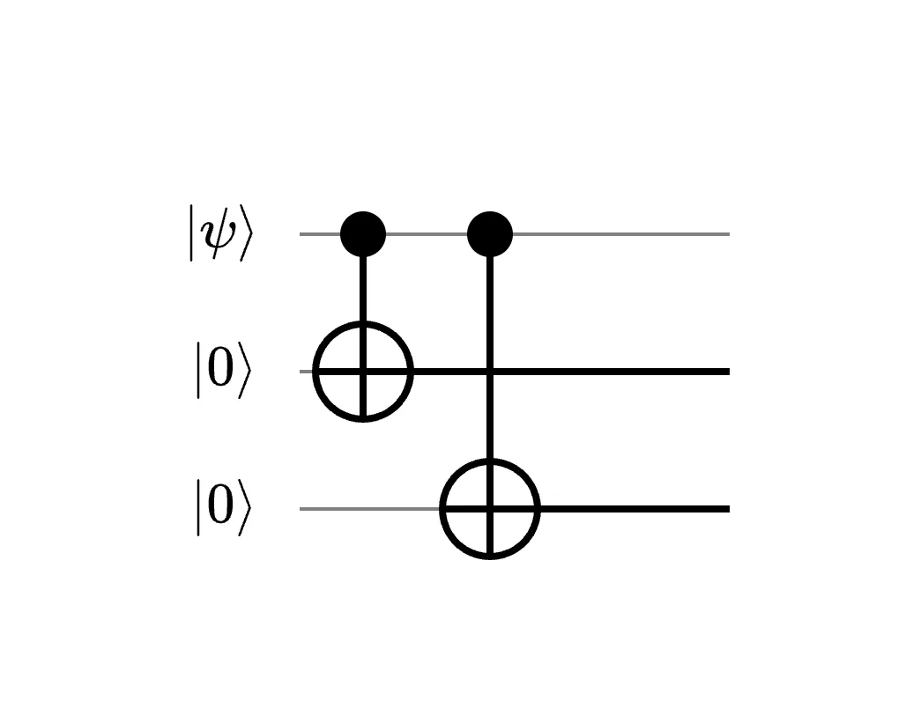
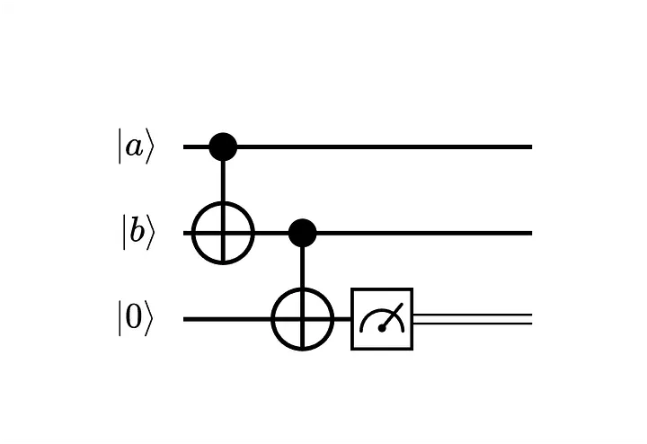
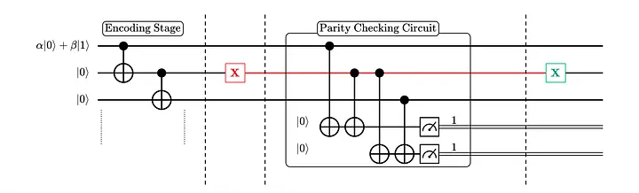

Detecting and Correcting Bit Flip Errors
So far, we know that redundancy is added in quantum error correction (QEC) by expanding the Hilbert space. The encoded state is an entangled state that lives in a subspace (the codespace) of the full Hilbert space, and errors rotate the encoded state out of this codespace and into an error space. As such, QEC repeatedly asks the question: “What subspace does the encoded state currently live in?” To answer this, we need to perform projective measurements. The obvious question next is, what are these projective measurements? Here, let's try to answer this question in the context of detecting and correcting bit flip errors.
Encoding a Single Qubit
The first step in any QEC scheme is to encode the qubit we are trying to protect with redundancy. Here, we use a three-qubit repetition code, mapping a single qubit onto three physical qubits:
\[ |\psi\rangle = \alpha|0\rangle + \beta|1\rangle \longrightarrow |\psi\rangle_L = \alpha|000\rangle + \beta|111\rangle = \alpha|0\rangle_L + \beta|1\rangle_L \]The circuit below produces this encoding, using two CNOT gates:

Parity Checking Circuit
We assume that at most one bit flip can occur on the encoded state at any given time. Suppose a bit flip occurs on the second qubit. The encoded state becomes:
\[ X_2|\psi_L\rangle = \alpha|010\rangle + \beta|101\rangle \]Notice that the second qubit now disagrees with the first and third qubits. Our goal is to detect this disagreement without measuring the qubits directly. Measuring the qubit directly would collapse the superposition — yielding \(|010\rangle\) with probability \(|\alpha|^2\) or \(|101\rangle\) with probability \(|\beta|^2\) — and destroy the encoded information. We want the encoded state to stay intact.
To detect disagreement between qubits without disturbing their quantum state, we use a parity-checking circuit. Rather than measuring the qubits directly, this circuit encodes the answer to a simpler question: are these two qubits in the same state, or different states? The circuit is given below:

Putting It All Together
With the parity-checking circuit in hand, we can now build a complete error detection and correction system. The circuit below combines the encoding and syndrome extraction stages into a single pipeline capable of detecting and correcting any single-qubit bit flip error.

The circuit has two stages:
- Encoding stage (before the barrier line): spreads the logical qubit across three physical qubits.
- Syndrome extraction stage: two ancilla qubits are used to measure the parity of pairs of data qubits.
The two bits of the error syndrome tell us:
- Whether qubits 1 and 2 are the same or different.
- Whether qubits 2 and 3 are the same or different.
In the circuit, a bit-flip error occurs on the second qubit. This gives an error syndrome of 11. The error is corrected by applying an \(X\) gate on the second qubit.
The Error Syndrome Table
The full set of possible syndromes and their corresponding errors is shown below:
| Syndrome \((M_0\, M_1)\) | Error | Qubit |
|---|---|---|
| 00 | No error | — |
| 10 | Bit flip \(X\) | \(q_0\) |
| 11 | Bit flip \(X\) | \(q_1\) |
| 01 | Bit flip \(X\) | \(q_2\) |
Error syndromes for the 3-qubit bit-flip repetition code. \(M_0\) and \(M_1\) are the measurement outcomes of ancilla qubits \(q_3\) and \(q_4\), respectively.
Three key properties of the error syndrome are worth noting:
- It contains no information about the encoded state. The syndrome tells us which qubit a bit-flip error occurred on, but reveals nothing about the values of \(\alpha\) and \(\beta\). The quantum information being protected remains untouched.
- It uniquely identifies the faulty qubit. Each single-qubit bit flip maps to a distinct syndrome, allowing unambiguous error identification.
- The measurement is non-demolition. Measuring the ancilla qubits projects the full system into one of four orthogonal subspaces of \(\mathcal{H}_8\). For instance, the 00 syndrome projects into the codespace spanned by \(\{|000\rangle, |111\rangle\}\), leaving the superposition \(\alpha|000\rangle + \beta|111\rangle\) completely undisturbed. The syndrome determines which subspace the state occupies, not the logical information within it.
Recovery
Once we have the syndrome, recovery is straightforward: we simply apply the corrective operation indicated by the syndrome table. For example, a syndrome of 11 tells us that qubit \(q_1\) was flipped, so we apply an \(X\) gate to \(q_1\) to restore the original encoded state.
It is important to note that this three-qubit code can only correct single-bit flip errors. To handle more errors simultaneously, we need to increase the code distance of the encoding. Recall that a code of distance \(d\) can correct up to \(\left\lfloor\frac{d-1}{2}\right\rfloor\) errors.
Next, we will look at how to detect and correct phase errors, a type of error with no classical analogue, as we continue exploring the challenges of quantum error correction.